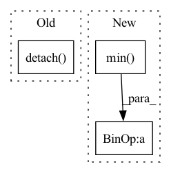

Pattern ID :9650

Before Change
mask = edge_attr
mask = self.control_sparsity(mask, kwargs.get("sparsity"))
mask = mask.sigmoid()
masks.append(mask.detach())
related_preds = self.eval_related_pred(x, edge_index, masks, **kwargs)
After Change
edge_attr = self.explain_edges_with_loop(x, walks, ex_label)
edge_mask = edge_attr.detach()
valid_mask = (edge_mask != -math.inf)
edge_mask[edge_mask == - math.inf] = edge_mask[valid_mask].min() - 1 // replace the negative inf
edge_masks.append(edge_mask)
hard_edge_masks.append(self.control_sparsity(edge_attr, kwargs.get("sparsity")).sigmoid())
In pattern: SUPERPATTERN
Frequency: 3
Non-data size: 3
Instances
Fragment ID: 34768610
Project Name: divelab/dig
Commit Name: d2838464a04282f7b1b6e3a98cdec42f3a3a29c7
Time: 2022-05-25
Author: haiyang@tamu.edu
File Name: dig/xgraph/method/gnn_lrp.py
M Class Name: GNN_LRP
N Class Name: GNN_LRP
M Method Name: forward(3)
N Method Name: forward(3)
M Parent Class: WalkBase
N Parent Class: WalkBase
M File Name: dig/xgraph/method/gnn_lrp.py
N File Name: dig/xgraph/method/gnn_lrp.py
M Start Line: 68
M End Line: 205
N Start Line: 67
N End Line: 211
'>
Before Change
// Compute the target Q value
target_q1, target_q2 = self.critic_target(next_obs, next_action)
target_q = th.min(target_q1, target_q2)
target_q = reward + ((1 - done) * self.gamma * target_q).detach()
// td error + entropy term
q_backup = (target_q - self.ent_coef * next_log_prob.reshape(-1, 1)).detach()
After Change
// Compute actor loss
// Alternative: actor_loss = th.mean(log_prob - qf1_pi)
qf1_pi, qf2_pi = self.critic.forward(obs, action_pi)
min_qf_pi = th.min(qf1_pi, qf2_pi)
actor_loss = (ent_coef * log_prob - min_qf_pi).mean()
// Optimize the actor
self.actor.optimizer.zero_grad()
'>
Fragment ID: 34768608
Project Name: dlr-rm/stable-baselines3
Commit Name: 0e4fc9c0acd7817c47041a0e5e3fa74936e0e69b
Time: 2019-09-25
Author: antonin.raffin@dlr.de
File Name: torchy_baselines/sac/sac.py
M Class Name: SAC
N Class Name: SAC
M Method Name: train(3)
N Method Name: train(3)
M Parent Class: BaseRLModel
N Parent Class: BaseRLModel
M File Name: torchy_baselines/sac/sac.py
N File Name: torchy_baselines/sac/sac.py
M Start Line: 169
M End Line: 207
N Start Line: 163
N End Line: 209
'>
Before Change
mask = edge_attr
mask = self.control_sparsity(mask, kwargs.get("sparsity"))
mask = mask.sigmoid()
masks.append(mask.detach())
related_preds = self.eval_related_pred(x, edge_index, masks, **kwargs)
After Change
edge_attr = self.explain_edges_with_loop(x, walks, ex_label)
edge_mask = edge_attr.detach()
valid_mask = (edge_mask != - math.inf)
edge_mask[edge_mask == - math.inf] = edge_mask[valid_mask].min() - 1 // replace the negative inf
edge_masks.append(edge_mask)
hard_edge_masks.append(self.control_sparsity(edge_attr, kwargs.get("sparsity")).sigmoid())
'>
Fragment ID: 34768607
Project Name: divelab/dig
Commit Name: d2838464a04282f7b1b6e3a98cdec42f3a3a29c7
Time: 2022-05-25
Author: haiyang@tamu.edu
File Name: dig/xgraph/method/gnn_gi.py
M Class Name: GNN_GI
N Class Name: GNN_GI
M Method Name: forward(3)
N Method Name: forward(3)
M Parent Class: WalkBase
N Parent Class: WalkBase
M File Name: dig/xgraph/method/gnn_gi.py
N File Name: dig/xgraph/method/gnn_gi.py
M Start Line: 69
M End Line: 121
N Start Line: 68
N End Line: 124